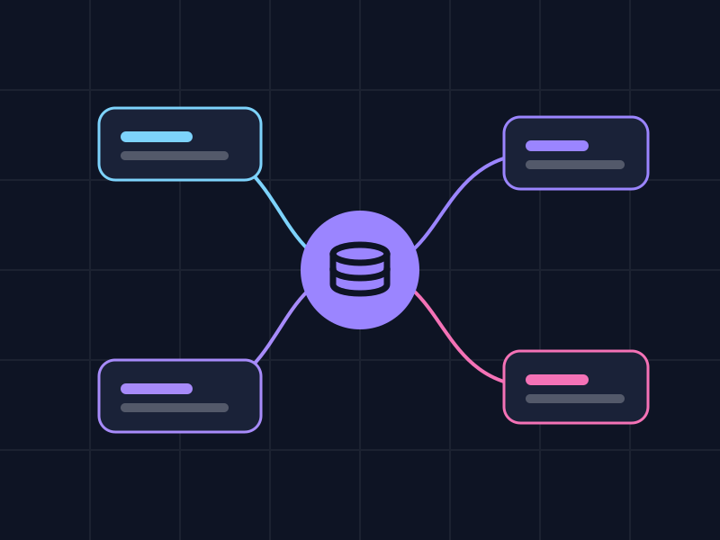

- LLM machine diagnosticsI designed end to end a feature with Claude on Vertex AI that summarizes telemetry from Cassandra and delivers structured, schema-validated diagnostics to the data science team. Fault diagnosis went from 2 weeks to 5 days.
- Agents for the CAN busI architected a multi-agent LLM system that runs Python kernels in parallel through MCP servers to decode undocumented CAN messages. Time per machine model dropped from 1 month to 2 weeks, and more than 20 decoded signals are already in production. Everything is checked against known data and tested on a held-out set.
- 10+ brandsI built a plugin registry for J1939/ISOBUS decoding that isolates each brand from the pipeline core. With it, the platform now supports more than 10 equipment brands and models.
- Data from a vendorI unlocked the geospatial data of more than 200 fields that were stuck in a vendor's proprietary format by integrating that format into the data pipeline, with no dependency on the partner's API.
- Automated ISOXMLISOXML files used to be assembled by hand for every operation of every machine. I replaced that with a single template generated by a Python pipeline, along with GeoJSON coverage maps built from raw CAN bus telemetry.
- Auditable historyI modeled a bi-temporal, append-only schema in Cassandra. The configuration of any field operation can be reconstructed at any point in its history.
- Production fixesI fixed the applied-product totals sent to customers after finding two defects in the ingestion service: the unit conversion in the flow delay compensation and the scope of an aggregation.
Data Scientist · AI Engineer
Data Science, LLMs and agents, deep learning
I've been working with data and AI for over 3 years, currently in agtech. I ship LLMs and agents to production, build time series pipelines and research deep learning on satellite imagery.
About me
I'm a data scientist and AI engineer with over 3 years of experience. At IoTag, I'm responsible for the data pipeline and the AI layer of a platform that collects telemetry from agricultural machinery. Outside work, I research deep learning on satellite imagery. I'm curious and love learning new things: almost every project of mine started with wanting to understand something I didn't know how to do yet.
Experience
- Dashboards for leadershipI evolved the Streamlit and Appsmith dashboards that a client company's leadership used to track results across a portfolio of about 30 customers.
- Data processingI built Python routines to clean, standardize and deduplicate shopping mall data coming from different sources, for a retail analytics prototype.
Projects


More in data
- 2023 Covid-19 in Brazil Exploratory analysis of cases in Brazil and forecasting with ARIMA and Prophet.
- 2024 Rain prediction in Australia I compared five models (linear regression, KNN, decision tree, logistic regression and SVM) to predict whether it will rain the next day.
- 2026 Game of Thrones networks Graphs of who interacts with whom in seasons 1 and 8: network metrics, most central characters and communities.
- 2026 Duplicate records with Levenshtein An extension workshop where I taught how to use edit distance to find duplicate customers in a database.
What I do
I work on four connected fronts: data, machine learning, LLMs and computer vision. I also take care of the cloud and the APIs so all of it reaches the people who use it.
Data Science and Machine Learning
Exploratory analysis, statistics, time series and machine learning models, always with cross-validation and metrics that make sense for the problem.
- pandas
- NumPy
- scikit-learn
- LightGBM
- SQL
- Cross-validation

Generative AI and agents
LLMs running in production: multiple agents working together, tools via MCP, RAG and structured responses validated by schema.
- Claude · Vertex AI
- MCP
- RAG
- LangChain
- Hugging Face
- Prompt engineering

Data engineering
ETL/ELT pipelines for high-volume time series, data modeling in Cassandra and PostgreSQL, and data quality routines, including for geospatial data.
- Python
- SQL
- Cassandra
- PostgreSQL
- ETL / ELT
- GeoJSON

Computer vision and deep learning
Segmentation, classification and detection with PyTorch, using ensembles, TTA and transfer learning. I've worked with satellite, crop and industrial imagery.
- PyTorch
- U-Net
- DeepLabV3+
- CNNs
- Ensembles
- Sentinel-2

Modern Stack
Proficient in
 Python
Python pandas
pandas NumPy
NumPy scikit-learn
scikit-learn PyTorch
PyTorch Hugging Face
Hugging Face LangChain
LangChain Claude API
Claude API Google Cloud
Google Cloud Cassandra
Cassandra PostgreSQL
PostgreSQL Docker
Docker